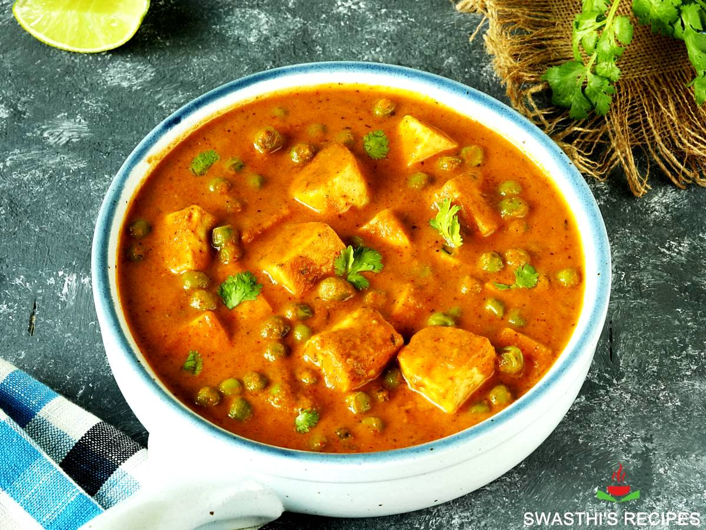

Ingredients
- 1 bunch Spinach
- 200 gms Paneer
- 400 gms Peas
- 1 Onion, Tomato
- 1 tsp Ginger-Garlic Paste
- 1 tsp Cumin Seeds
- 1 tsp Turmeric Powder
- 1 tsp Red Chilli Powder
- 1 tsp Garam Masala
- 1 tsp Salt
- 1 tsp Oil
Instructions
- Blanch spinach, blend to a smooth paste.
- Heat oil, add cumin seeds, ginger-garlic paste, onions, and tomatoes. Cook until brown.
- Add turmeric, red chilli powder, garam masala, and salt. Cook for 5 minutes.
- Add spinach paste, paneer cubes and Peas. Cook for 5 minutes. Serve hot.